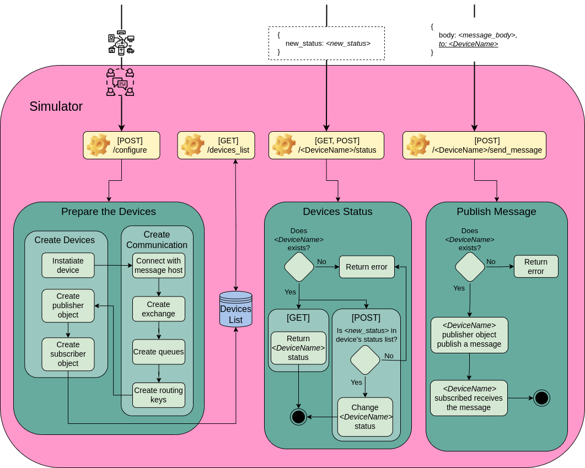

@@include('header.htm')

@@include('blocks/navigation-inner.htm')

<!-- details page -->
<section class="pt-5">
  <div class="container shadow section-sm rounded">
    <div class="row">
      <!-- sidebar -->
      <div class="col-lg-3">
        <ul class="sidenav">
          <li title="Genreral Info" class="sidelist">
            <a href="list.html">Genreral Info</a>
          </li>
          <li class="sidelist parent active">
            <a href="components.html">Components</a>
            <ul>
              <li class="sidelist">
                <a href="configurator.html">Configurator</a>
              <li class="sidelist active">
                <a href="simulator.html">Simulator</a>
              <li class="sidelist">
                <a href="adapter.html">Adapter</a>
            </ul>
          </li>
          <li class="sidelist parent">
            <a href="list.html">Tutorial</a>
            <ul>
              <li class="sidelist">
                <a href="single.html">Startup</a>
              <li class="sidelist">
                <a href="envaiot-ml.html">EnvAIoT-ML</a>
            </ul>
          </li>
        </ul>
      </div>

      <!-- body -->
      <div class="col-lg-8">
        <div class="px-lg-5 px-4">
          <h2 class="mb-4 font-weight-medium">Components</h2> <!-- main content -->
          <div class="content">
            <p>
              The Simulator operates in the manner shown in Figure below. Four endpoints are
              present:
            <ul>
              <li><i>/configure</i>, for configuring the component;</li>
              <li><i>/devices_list</i>, for getting the list of all configured devices;</li>
              <li><i>/[DeviceName]/status</i> for getting or changing a device's status;</i></li>
              <li><i>/[DeviceName]/send_message</i>, for requesting a device to send a particular message.</li>
            </ul>
            </p>
            <p></p>
            <p>
              The Simulator starts preparing the devices when a request to setup it is submitted. It also creates
              the communication and the devices throughout that procedure. Each device is initially instantiated.
              In order to generate the exchange, queues, and routing keys, it then establishes a connection with
              the communication host set. The names of the two routing keys are constructed using the capitalized
              letters from the device names, followed by "_info" for the publishing routing key and "_msg" for the
              receiving routing key, for each device. Each gadget also has a queue. Simulator produces the
              publisher and subscriber objects after the communication is ready, with the publisher object
              starting to be prepared to publish a message when asked. It uses "_msg" to subscribe to the
              device's associated routing keys in order to generate the subscriber object. If the senders are set,
              it also uses "_info" to subscribe to the relevant sender device's routing key. The binding process
              then proceeds with each routing key that has subscribed to the device's queue. As soon as the
              process of subscribing and binding is complete, a thread is launched that executes the subscriber
              object.
            </p>
            <p>
              Each newly formed device is kept in a list of devices. The devices list is returned in response to
              a request for all devices. The /[DeviceName]/status endpoint allows the user to obtain the status
              of a specific device, however the proper device name must be included in <i>[DeviceName]</i>.
              As a result, it determines whether the device is real before returning its state. By utilizing the
              POST method rather than the GET one, the same endpoint may be used to change a device's state.
              For that, it verifies that the user sends the updated status, and if it already exists in the
              device's list of updated statuses, it is set.
            </p>
            <p>
              The user can use the <i>[DeviceName]/send_message</i> endpoint to send a message. The user
              specifies the message body and, optionally, the message recipient in the request body.
              The message will be published in the "_info" device's routing key and will be received by the
              devices subscribing to it if the recipient field is left empty. If the message has a defined
              recipient, the recipient's routing key with the prefix "_msg" will be made public. The broker is
              in charge of the message delivery procedure.
            </p>
            <p>
              The Simulator component was implemented using a layer structure. The component's endpoints are
              contained in the <i>Controller</i> layer. The <i>Model</i> layer implements the classes that
              define the device objects, i.e., device, publisher, and subscriber. The functions to communicate
              with the RabbitMQ broker, such as generating routing keys and queues, are contained in the
              <i>Service</i> layer. The <i>Utils</i> layer has various auxiliary functions that correspond to
              operations on strings or lists.
            </p>
          </div>
          <!-- navigation -->
          <nav class="pagination">
            <a class="nav nav-prev" href="/configurator.html"><i class="ti-arrow-left mr-2"></i>
              <span class="d-none d-md-block">Configurator</span></a>
            <a class="nav nav-next" href="/adapter.html"> <span class="d-none d-md-block">Adapter</span><i
                class="ti-arrow-right ml-2"></i></a>
          </nav>
        </div>
      </div>
    </div>
  </div>
</section>
<!-- /details page -->

@@include('blocks/footer.htm')

@@include('footer.htm')